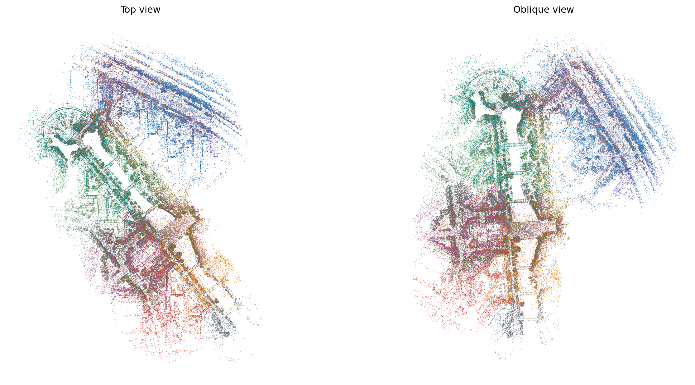

Fresh circle placement, point-cloud BEVs, multilayer loop verification and persistent PCM/CBS ran for all 14 GRACO robots on 148. There are 356 40 m circles, 174 verified loops, 174 PCM-retained loops, and 1 final connected component(s).
Component joint ATE: aerial01 (14 robots): 0.952 m
Download 14-robot map PLY · 12,951,872 points · 259.4 MiB

| Robot | Circles | Cell coverage | Map points | Reference | GPU factors | Raw ATE [m] | Individual CBS ATE [m] |
|---|---|---|---|---|---|---|---|
| aerial01 | 31 | 99.03% | 1096509 | aerial01 | 12 | 0.185 | 0.158 |
| aerial02 | 14 | 99.41% | 518395 | aerial01 | 10 | 0.060 | 0.064 |
| aerial03 | 23 | 99.11% | 980642 | aerial01 | 15 | 0.068 | 0.210 |
| aerial04 | 22 | 99.09% | 591952 | aerial01 | 2 | 0.116 | 0.116 |
| aerial05 | 30 | 99.81% | 864990 | aerial01 | 17 | 0.196 | 0.219 |
| aerial06 | 15 | 99.24% | 690086 | aerial01 | 19 | 0.063 | 0.063 |
| aerial07 | 21 | 99.61% | 830665 | aerial01 | 16 | 0.076 | 0.112 |
| aerial08 | 21 | 99.38% | 744695 | aerial01 | 8 | 0.124 | 0.182 |
| ground01 | 22 | 99.61% | 992072 | aerial01 | 21 | 0.288 | 0.285 |
| ground02 | 31 | 99.09% | 1113185 | aerial01 | 17 | 0.655 | 0.684 |
| ground03 | 23 | 99.46% | 684249 | aerial01 | 22 | 0.586 | 0.583 |
| ground04 | 33 | 99.19% | 1386893 | aerial01 | 15 | 0.532 | 0.490 |
| ground05 | 43 | 99.08% | 1373822 | aerial01 | 0 | 0.477 | 0.479 |
| ground06 | 27 | 99.23% | 1083717 | aerial01 | 0 | 0.448 | 0.451 |
Retained validated EllipseLIO odometry and native map observations were reused. Circle geometry was sealed at capture end. Retrieval used the existing staged descriptor/evidence services; PCM, geometry-factor exchange and CBS ran in independent robot processes. No centralized graph solve or ground-truth initialization was used. This is not a fresh bag replay or online geometry-freezing trial.
PLY geometry contains every unique retained native map representative once per robot, re-posed using its owning optimized submap. No extra voxel downsampling was applied. Points outside all circles are retained with the nearest-circle correction and marked uncovered. Each component uses one gravity rotation from native IMU data; ground truth is not used for the PLY. Disconnected components have separate files and must not be overlaid as an aligned global map.
Recovery retrieval through export (preparation reused): 1084.4 s wall, 1068.0 CPU s, 11.13 GiB peak simultaneous process-tree RSS. Circle/BEV preparation: 15.4 s. Detection/verification: 601.2 s. Persistent graph stage: 441.9 s, including waiting for the 10-second cadence and 30 final iterations per robot. No host resource quota was imposed. Shared pages may count twice in RSS. Preparation was performed in the first attempt; its time is reported separately. The first native retrieval process segfaulted after 38 verified loops. Its outputs/logs are retained; no thresholds were changed for the restart. These are not fresh end-to-end or steady-state timing benchmarks.
Staged descriptor/evidence IPC: 451.35 MiB. Distributed graph traffic: 27.71 MiB (CBS 2.64, PCM 0.43, geometry 24.65). These are actual serialized application messages, excluding DDS/IP overhead, discovery, odometry, and visualization/download traffic. The two stages use different transports and are reported separately.
All admitted geometry factors passed final native checks. Maximum published loop mismatch: 0.585 m / 0.947 degrees. The PLY count, finite coordinates and robot IDs were checked on readback; Open3D independently reads XYZ/RGB. Evo 1.36.5 evaluates corrected IMU-reference GT with 50 ms association, one rigid alignment per component, no scale fit.